Learn_ROS-I
ROS-I 初试
ROS节点 范例
1.创建一个节点
当我们下好了 ROS 之后，可以尝试创建自己的一个节点了！但是正如同工作要有工作桌，我们创立一个工作区才能干活，于是，我们先 mkdir 一个文件夹！
mkdir ~/RosWork 以及建立一个子文件夹 src ，他就是来存我们源代码的地方
cd ~/RosWork/
mkdir src
cd ./src 不要换 src 名字！！！
下面向电脑宣称这地方归 ROS 管：
catkin_init_workspace 先返回上一级文件夹
cd .. 先编译一次环境：
catkin_make 从而产生工作文件！我们多了很多文件夹：
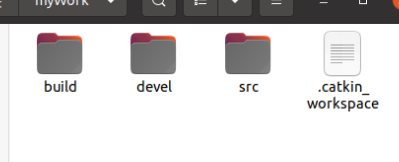
下一步，就是设置一下环境变量，让电脑和ROS知道你的办公桌子在哪里：
source devel/setup.bash 不放心？想看看地方对没对？用这个指令：
echo $ROS_PACKAGE_PATH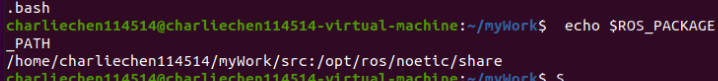
这下工作桌修好了！
开始向里面塞东西
下面向节点里面塞东西：
下面创建一个 package 包（节点下属的一个功能包）
cd ./src
catkin_create_pkg talkerAndListener std_msgs rospy roscpp 后边包含了在编译时需要依赖的其他功能包：ROS 的标准消息结构（int、bool 等）以及 C++ 和 Python 的接口。
进去 src 文件看看
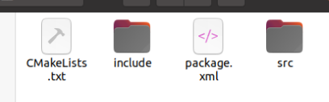
我们可以开始写文件了：
为了测试，我们选用最经典的 订阅 与 接受 来尝试我们的第一次节点编写：
cd ~/你的工作区文件夹/src/talker_and__listener/src
vim listener.cpp 偷懒了，用 vim 直接编辑！
// 塞这些东西进去
// 原博客：https://blog.csdn.net/weixin_44420419/article/details/111355655
#include "ros/ros.h"
#include "std_msgs/String.h" //所要订阅的消息类型，此处是std)msgs包下的String。msg
//回调函数部分
void chatterCallback(const std_msgs::String::ConstPtr& msg)
{
ROS_INFO("I heard: [%s]", msg->data.c_str()); //将接收到的消息打印出来
}
/*subscriber的回调函数，当接收到 chatter 话题的时候就会被调用。
参数是所接收的消息的常数指标（const pkg_name::msg_name::ConstPtr& msg）.
消息是以 boost shared_ptr 指针的形式传输，这就意味着你可以存储它而又不需要复制数据。
之后使用msg->field_name即可存取message的资料
*/
int main(int argc, char **argv){
ros::init(argc, argv, "listener"); //初始化ROS节点
ros::NodeHandle n; //创建句柄节点
ros::Subscriber sub = n.subscribe("chatter", 1000, chatterCallback);
/*告诉 master 要订阅 chatter 话题（第一个参数）上的消息。
当有消息发布到这个话题时，ROS 就会调用 chatterCallback() 函数（第三个参数）。
第二个参数是队列大小，当缓存达到 1000 条消息后，自动舍弃时间戳最早的消息。
NodeHandle::subscribe() 返回 ros::Subscriber 对象,此处为sub。
当这个对象销毁时，它将自动退订 chatter 话题的消息。
有各种不同的 NodeHandle::subscribe() 函数，可以指定类的成员函数，甚至是 Boost.Function 对象可以调用的任何数据类型。
*/
ros::spin();
/*ros::spin() 进入自循环，可以尽可能快的调用消息回调函数，会调用主程序中所有回调函数，此处只有chatterCallback()
一旦 ros::ok() 返回 false，ros::spin() 就会立刻跳出自循环。
这有可能是 ros::shutdown() 被调用，或者是用户按下了 Ctrl-C，使得 master 告诉节点要终止运行。
*/
return 0;
} 现在：摁 esc 输入 :wq 退出编辑和 vim ，随后再整一个 talker.cpp
vim talker.cpp//头文件部分
#include <sstream>
#include "ros/ros.h"
/*"ros/ros.h 是一个实用的头文件，它引用了 ROS 系统中大部分常用的头文件。"
地址在 /opt/ros/noetic/include/ros/" */
#include "std_msgs/String.h"
/* "std_msgs"是一个消息类型依赖包，此处要传输string类型数据，
需要包含该数据类型的头文件String.h，就在这个依赖包里 */
//初始化部分
int main(int argc, char **argv)
{
ros::init(argc, argv, "talker");
/* ROS节点初始化。初始化的init函数包含三个参数，
前两个参数是命令行或launch文件输入的参数，可以用来命名重映射等功能；
第三个参数定义了Publisher节点的名称“talker”，不允许重复，是一个base name。 */
ros::NodeHandle n;
/* 为这个进程的节点创建一个句柄。
第一个创建的 NodeHandle 会为节点进行初始化，
最后一个销毁的 NodeHandle 则会释放该节点所占用的所有资源。 */
ros::Publisher chatter_pub = n.advertise<std_msgs::String>("chatter", 1000);
/* 告诉 master 将要在 chatter（话题名）上发布 std_msgs/String 消息类型的消息。
这样 master 就会告诉所有订阅了 chatter 话题的节点，将要有数据发布。
NodeHandle::advertise() 会建立一个topic。在ROS Master端注册一个Publisher，
返回一个 ros::Publisher 对象,此处为chatter_pub，,它有两个作用：
1) 它有一个 publish()函数可以在topic上发布(pubish)消息；
2) <std_msgs::String>指定后面要发布的消息类型是std_msgs包中的string类型，如果消息类型不对,它会拒绝发布。
("chatter", 1000)中两个参数，第一个参数指定以"chatter"为话题发布消息
第二个参数是发布序列的大小。如果发布的消息的频率太高，缓冲区中的消息在大于 1000 个的时候就会开始丢弃先前发布的消息。*/
ros::Rate loop_rate(10);
/* ros::Rate 对象可以允许你指定自循环的频率。它会追踪记录自上一次调用 Rate::sleep() 后时间的流逝，并休眠直到一个频率周期的时间。在这个例子中，让它以 10Hz 的频率运行，即节点休眠时间为100ms。 */
//循环部分
int count = 0;
while (ros::ok())
{
/*进入节点的主循环，如果下列条件之一发生，ros::ok() 返回false，跳出循环：
·SIGINT 被触发 (Ctrl+C)：roscpp 会默认生成一个 SIGINT 句柄，它负责·处理 Ctrl+C 键盘操作使ros::ok() 返回 false
·被另一同名节点踢出 ROS 网络
·关闭函数ros::shutdown() 被程序的另一部分调用
·节点中的所有 ros::NodeHandles 都已经被销毁
一旦 ros::ok() 返回 false, 所有的 ROS 调用都会失效。
*/
std_msgs::String msg;//建立暂存区，先将消息放入，在进行publish
std::stringstream ss;
ss << "hello world " << count;
msg.data = ss.str();//将要输出的字符串消息存储到string消息类型中唯一成员data中
ROS_INFO("%s", msg.data.c_str()); //类似C/C++的 printf/cout 等函数，打印日志信息。
chatter_pub.publish(msg);//发布封装完毕的消息msg。Master会查找订阅该话题的节点，并完成两个节点的连接，传输消息
ros::spinOnce();//处理订阅话题的所有回调函数callback()，
loop_rate.sleep(); //休眠，休眠时间由loop_rate()设定
++count;
}
return 0;
} 打开你的 CMakeLists.txt ，随后找到（这里推介使用VScode 的搜索，嘎嘎快）
留意到这里：
add_executable() 这是用于设置需要编译的代码和生成的可执行文件。第一个参数为期望生成的可执行文件的名称，后边的参数为参与编译的源码文件（cpp），如果需要多个代码文件，则可
在后面依次列出，中间用空格进行分隔。
和：
target_link_libraries 用于设置链接库。很多功能需要使用系统或者第三方的库函数，通过该选项可以配置
执行文件链接的库文件，第一个参数是可执行文件的名称，后面依次列出需要链接的
库。此处编译没有使用其他库，添加默认链接库${catkin_LIBRARIES}即可。
以及
add_dependencies 用于设置依赖。在很多应用中，我们需要定义语言无关的消息类型，消息类型会在编
译过程中产生相应语言的代码，如果编译的可执行文件依赖这些动态生成的代码，则
需要使用add_dependencies添加${PROJECT_NAME}_generate_messages_cpp
配置，即该功能包动态产生的消息代码。该编译规则也可以添加其他需要依赖的功能包。
下面我们设置一下：
include_directories(include ${catkin_INCLUDE_DIRS})
add_executable(talker src/talker.cpp)
target_link_libraries(talker ${catkin_LIBRARIES})
add_dependencies(talker ${PROJECT_NAME}_generate_messages_cpp)
add_executable(listener src/listener.cpp)
target_link_libraries(listener ${catkin_LIBRARIES})
add_dependencies(listener ${PROJECT_NAME}_generate_messages_cpp)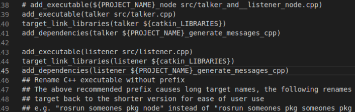
现在注意，现在注意！我们的Cmake 的版本要求的是过高的，需要调整最低版本，否则在之后的文件编译中是会爆出找不到文件的迷惑错误！看到文件的第一行
cmake_minimum_required(VERSION 3.0.2) 改成：
cmake_minimum_required(VERSION 2.8.3) 编译一下
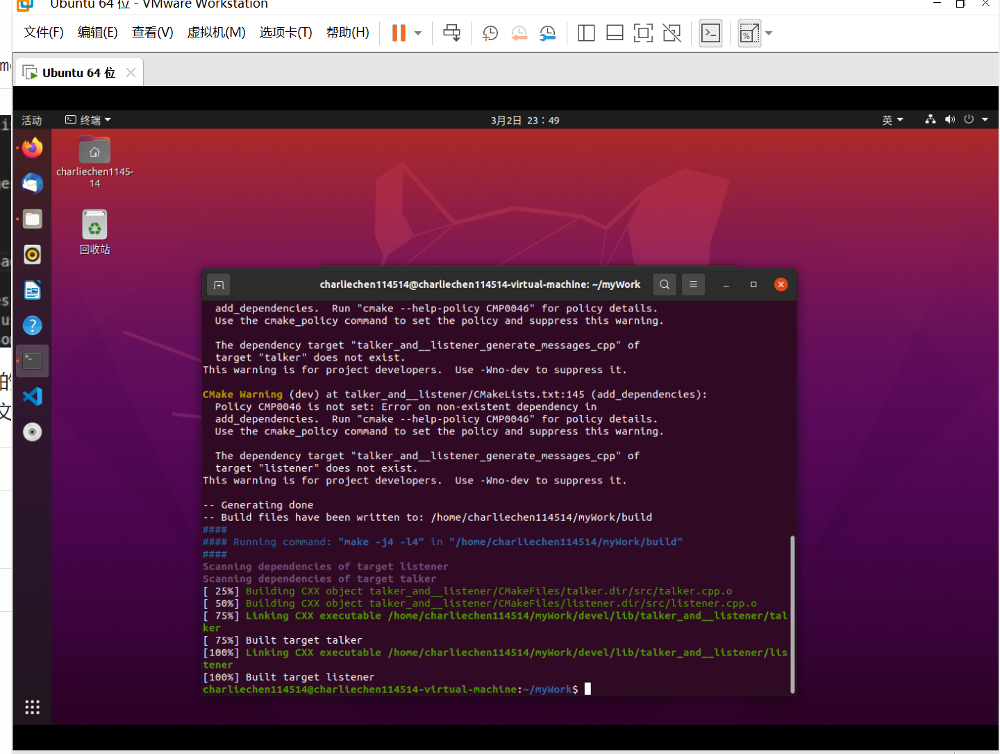
成功了。
为了运行，还是要设置环境变量：
cd ~/<workspace name>
source ./devel/setup.bash 想偷懒的话
$ echo "source ~/ros/tr3_6/devel/setup.bash" >> ~/.bashrc
$ source ~/.bashrc 启动 ROS:
roscore 开一个新终端：运行我们的包
rosrun talkerAndlistener talker 再来一个：
rosrun talkerAndlistener listener
下班！
ROS节点：调试（基于VScode）
我们已经学会创建一个简单的 ROS 节点了，但是，我们应当要学会调试，毕竟，我们的代码可不会那么短！出现了问题调试就是必然的！
下面开始介绍基于Vscode的 ROS 的调试办法：
创建调试用的节点
首先 cd 到工作文件夹，创建他们
mkdir -p workTab2/src
cd workTab2
catkin_make 以准备好基本的文件！
下载插件
VScode 有两个很是好用的插件！一个是ROS，另一个是 catkin_tools 他们可以让你很好的进行ROS运行和调试（不用再命令框里看了！）。
那么问题来了，在哪里打开VScode 呢？显然不是随便打开，也不是在src文件，而是在工作文件夹 workTab2 下，
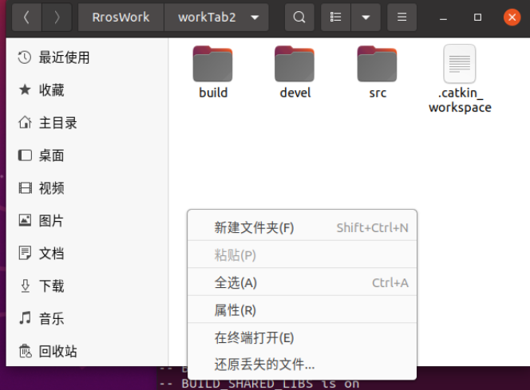
这个地方，准备 ctrl+alt+T打开终端：
code . 这是结构！就出来了：

点击最左侧栏目中的第四个：扩展，安装
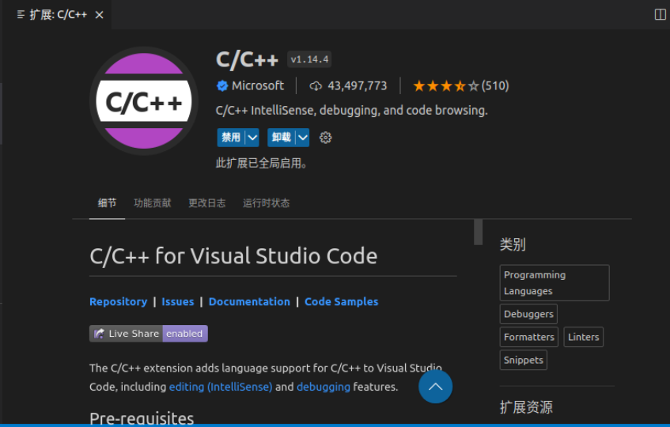
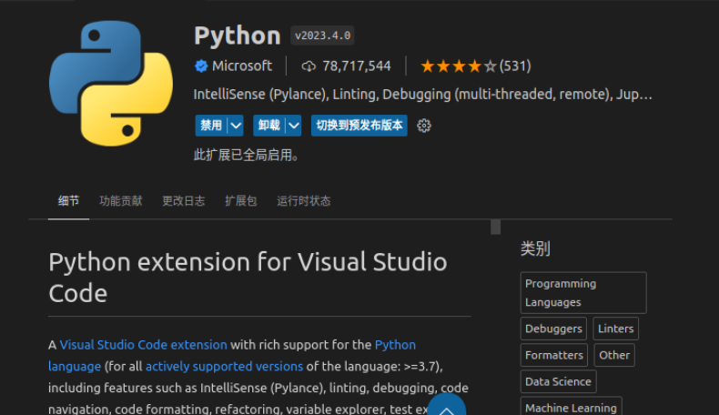
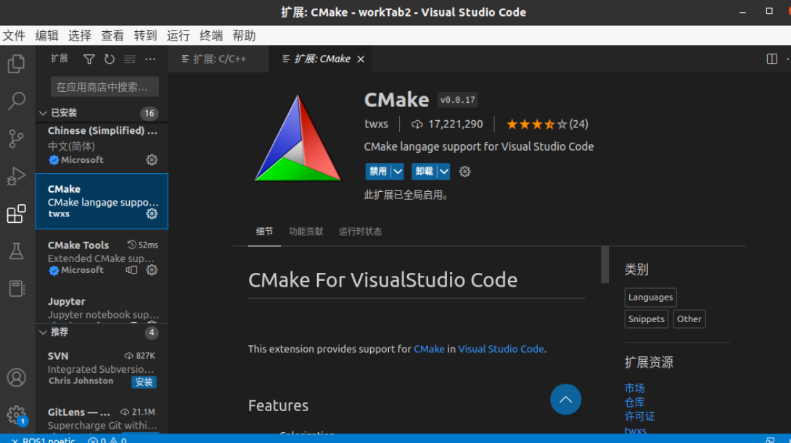
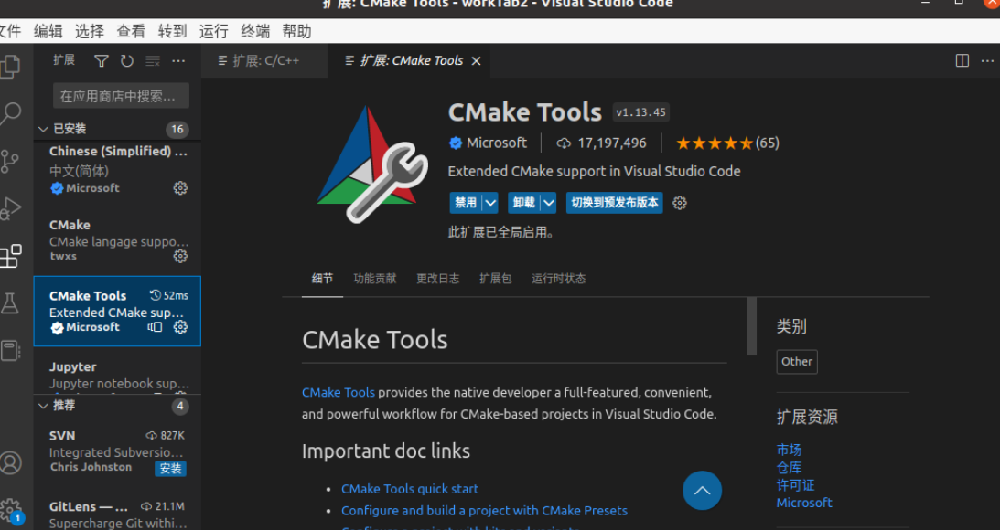
好消息是：一般你已经安上了。
但是这两个：
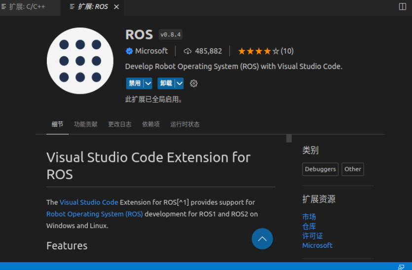
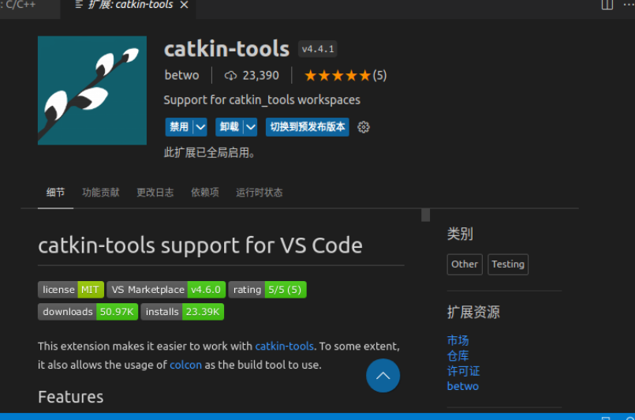
是你大概率没有安装的！安上！
好了！让我们见识一下这玩意好用不好用！
一般的，在官方的命令行创建时如下的
cd ~/workTab2/src
catkin_create_pkg talker roscpp rospy std_msgs 命令行快，但是不够可视化。那我们安装的插件是怎么处理的呢？看到VScode 的文件管理器：右键 src
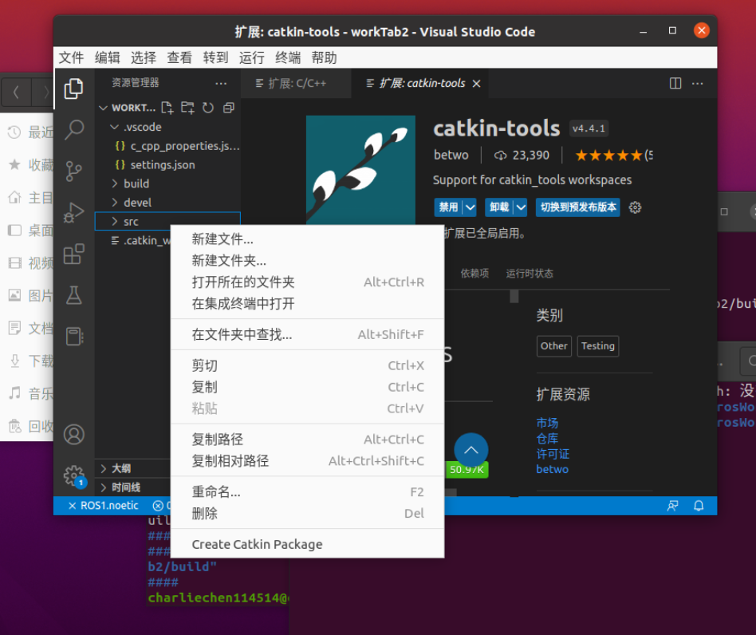
怎么着？有一个 Create Catkin Package 了，点击它：
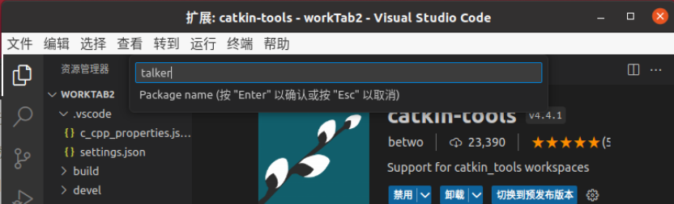
留意这里！你可以输入你想创建的节点名字！
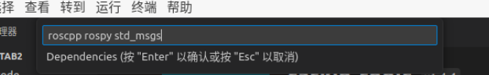
你一需要的 dependencies （就是命令行后半部分的内容）
一个回车：包创建结束
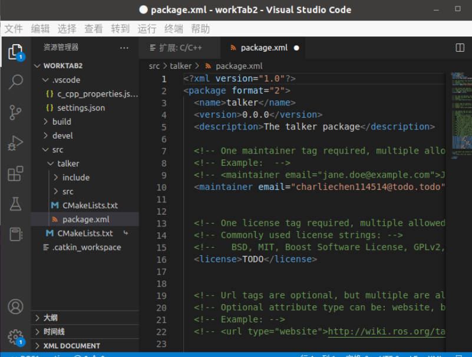
Coding时间
在我们的 src 文件夹下，右键整一个新文件：写完代码
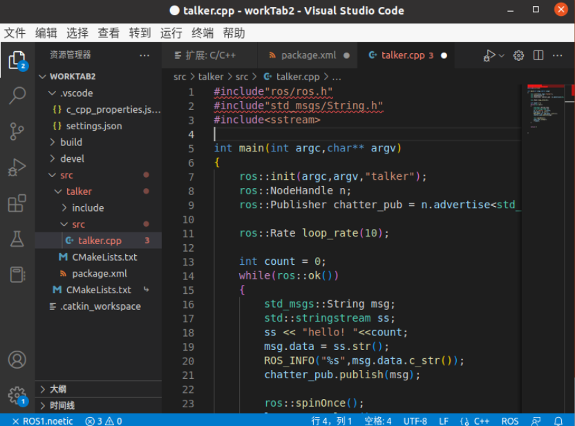
现在你无论是调试还是运行都不行！缺少配置文件！这是最最最麻烦的地方！！！
补全配置文件
CmakeLists.txt 的内容补全
有点捞，这个还是要我们自己在文件中手动补充！
aux_source_directory(./src SRCS)
add_executable(talker ${SRCS})
target_link_libraries(talker ${catkin_LIBRARIES}) 有趣的是！这次我们不需要再次改动 Cmake的最低要求版本了！
查看c_cpp_properties.json
一般我们改动添加：
"compileCommands": "${workspaceFolder}/build/compile_commands.json" 我们后面会知道，这是调用产生的调试文件，等效于在命令行输入了：
catkin_make -DCMAKE_EXPORT_COMPILE_COMMANDS= YES 后调用它，他在 devel/lib里面！
不同于我参考的，我选择了直接在命令行里直接编译产生二进制文件：
catkin_make catkin_make -DCMAKE_EXPORT_COMPILE_COMMANDS= YES 省事！
不用改动settings.json
手动产生task.json
我说停！不是让你 vim task.json ，而是在Vscode 里摁下 ctrl + shift + P

输入 tasks: configure task单击一下，注意，会弹出来很多东西！找到：catkin_make: build 点击（其他的我不清楚，萌新QAQ）。
对文件做出如下的修改：
{
"version": "2.0.0",
"tasks": [
{
"label": "catkin_make", //代表提示的描述性信息
"type": "shell", //可以选择shell或者process,如果是shell代码是在shell里面运行一个命令，如果是process代表作为一个进程来运行
"command": "catkin_make",//这个是我们需要运行的命令
"args": [
"-DCMAKE_EXPORT_COMPILE_COMMANDS=ON"
],//如果需要在命令后面加一些后缀，可以写在这里，比如-DCATKIN_WHITELIST_PACKAGES=“pac1;pac2”
"group": {"kind":"build","isDefault":true},
"presentation": {
"reveal": "always"//可选always或者silence，代表是否输出信息
},
"problemMatcher": "$msCompile"
},
]
} ！我参考的 CSDN 的作者说他不清楚为什么需要添加
"-DCMAKE_EXPORT_COMPILE_COMMANDS=ON" 这是因为我们本质上是链接 ROS 官方的调试文件产生方法，从那里来调试，如果我们不在这里下这个指令，以及不在c_cpp_properties.json 做出那样更改的话：我们无法链接那个文件！
手动创建 launch.json
别！不用 vim. 最聪明的办法是
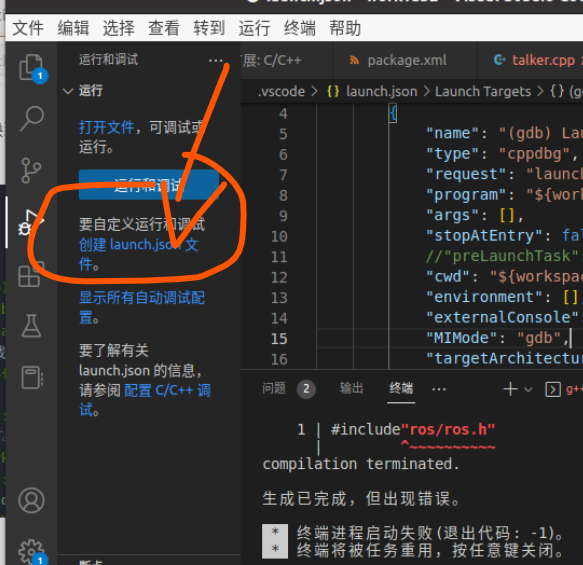
点击它，配置如下内容
{
"version": "0.2.0",
"configurations": [
{
"name": "(gdb) Launch",
"type": "cppdbg",
"request": "launch",
# 这里要修改，找到编译生成的二进制可执行文件
# 这里！！！！！！！！！！！！！！！！！！！！！！！！
"program": "${workspaceFolder}/build/talker/talker",
"args": [],
"stopAtEntry": false,
//"preLaunchTask": "build",
"cwd": "${workspaceFolder}",
"environment": [],
"externalConsole": false,
"MIMode": "gdb",
"targetArchitecture": "x64",
"avoidWindowsConsoleRedirection": true,
"setupCommands": [
{
"description": "Enable pretty-printing for gdb",
"text": "-enable-pretty-printing",
"ignoreFailures": true
}
]
}
]
} 好的，如果你执行过：
catkin_make -DCMAKE_EXPORT_COMPILE_COMMANDS= YES 那你就去 build下面找！
我的是：
~/workTab2/build/talker/talker 而如果你是采用 Ctrl + shift+ B VScode 的 task.json 来帮你编译的：就去devel/lib下找！
~/workTab2/devel/lib/talker/talker 总而言之，找到你的二进制文件在哪里！！！
现在的现在，再次编译一次！！！Ctrl+shift+B!!!
如果出现了编译成功（粉色的蓝色的绿色的都有，但是红色的就是寄！这个时候会给你报一些警告和错误！可以留意）
随后，尝试调试：
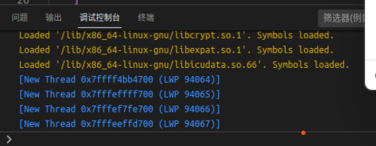
出现这个，恭喜你！调试成功！可以打断点了！
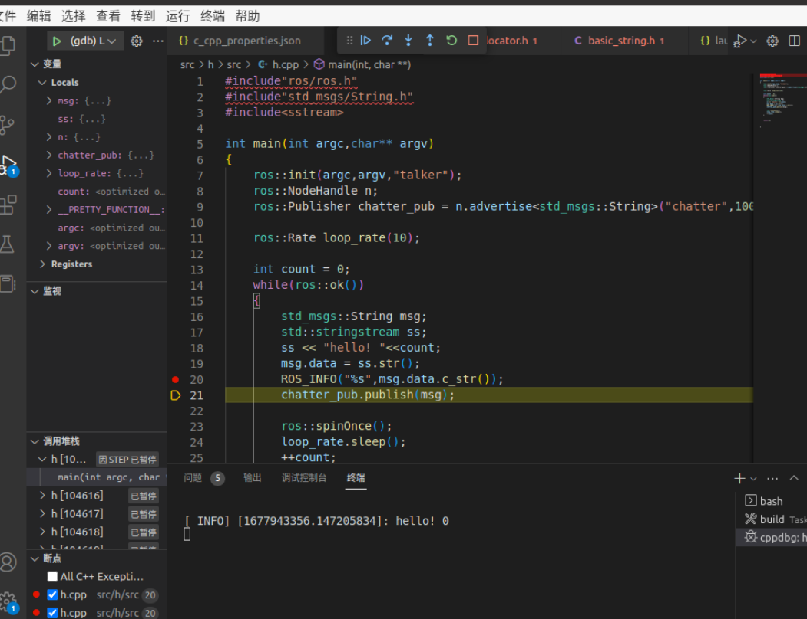
OK！下班！！！
如果对文件有所更改，请注意，你需要重新编译：Ctrl + Shift + B，随后再次调试！
如果断点失效，博主这里没有什么更好的办法（整了几个小时也没拿出可行的方案（彩笔落泪）），那只好试试重新生成文件看看！
ROS入门
ROS：Robot operating System
他是一个开源元操作系统，类似于我们经典意义的操作系统，有大量的工具，库与协议，还可以在多台计算机上获取，构建编写和运行代码的工具和库。
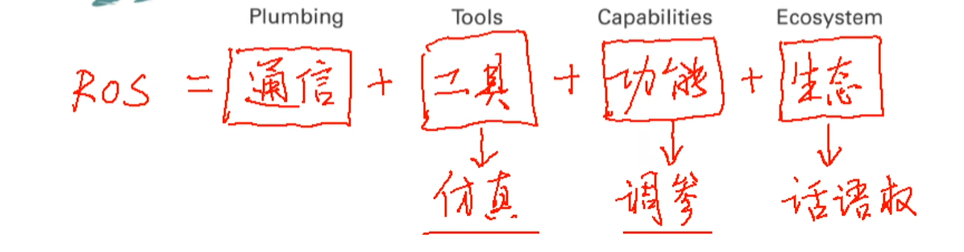
至于ROS 的安装，这就不在阐述！
还是决定提供一个简单的方式测试一下你的ROS有没有安装成功。启动Linux虚拟机，随后开三个终端！
第一个终端启动ros环境，输入
roscore 第二个输入
rosrun turtlesim turtlesim_node 第三个输入
rosrun turtlesim turtle_teleop_key 看看小乌龟可不可以跑！注意第三个终端要在最上面！（焦点必须在第三个终端）
体验经典：hello world
ROS工作的程序有C++ 和 Python。
首先，我们需要让Linux认识一下ROS的库！这需要我们来初始化工作环境！其基本步骤如下：
先创建一个工作空间
创建一个工作包
编辑源文件
编辑配置文件
编译并执行
当然，真正的差异就在第四步，那我们先来看前几步！
第一步：
简而言之，找个地方！安装当下的文件，今天我们先创建一个RosLearn 文件夹吧，以及我们的第一个实验：Learn1,注意，还要整一个 src 文件夹，并且必须是这个名字！！！
mkdir -p Roslearn/learn1/src
cd Roslearn/learn1
catkin_make #this instructions aims to init the workspace!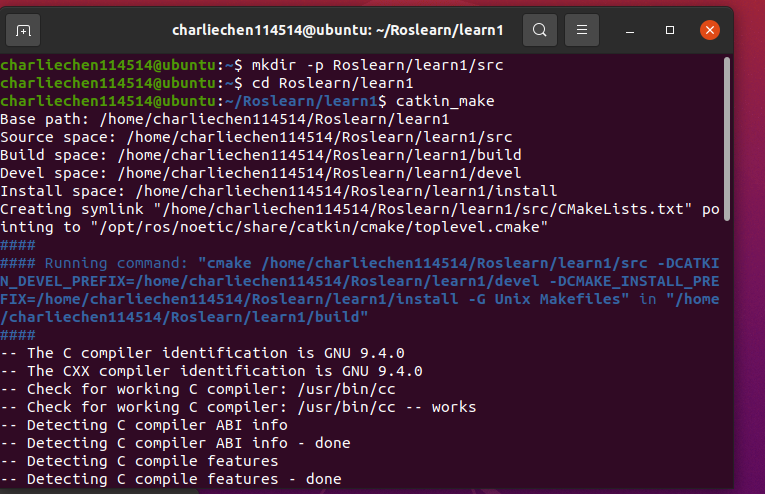
-16806218769883.png)
这些正是Cmake的日志，下面开始第二部，创建一些简单的package!
我们把我们一切的源文件放到src文件夹下，随后，在命令行下输入
cd src 如是，创建功能节点即可
catkin_create_pkg 'packName' 'dependency' #when writing , you are no need to add ''!
# examples
catkin_create_pkg helloWorld roscpp rospy std_msgs 会发现：
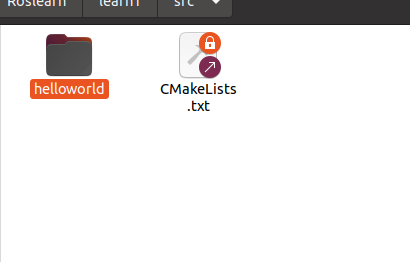
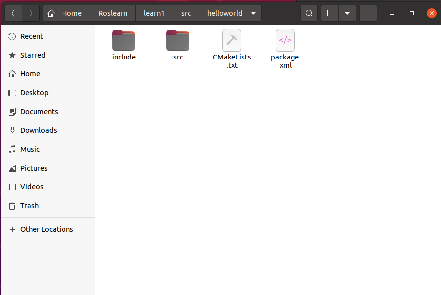
多了很多文件，我们不予理会，还没到时候！
roscpp是C++的实现库，rospy是 python库的，这点需要注意！
好了，开始第三步！！！cd到包里的src文件
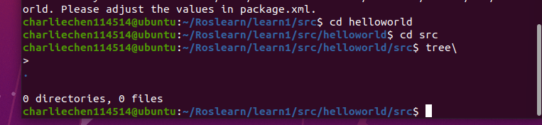
如果熟悉 vim, 可以直接 vim helloworld_cpp.cpp来一个！
vim helloworld_cpp.cpp 书写这些代码！
#include"ros/ros.h"
int main(int argc,char* argv[]){
ros::init(argc,argv,"hello");
ROS_INFO("hello world!!!");
return 0;
} 摁esc退出insert模式，随后:wq退出vim。
随后，更改CmakeLists 配置文件，注意到是这里的
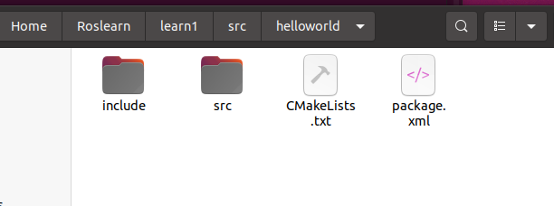
找到第136行的 add_executable,和第149行的target_link_library做出这样的更改
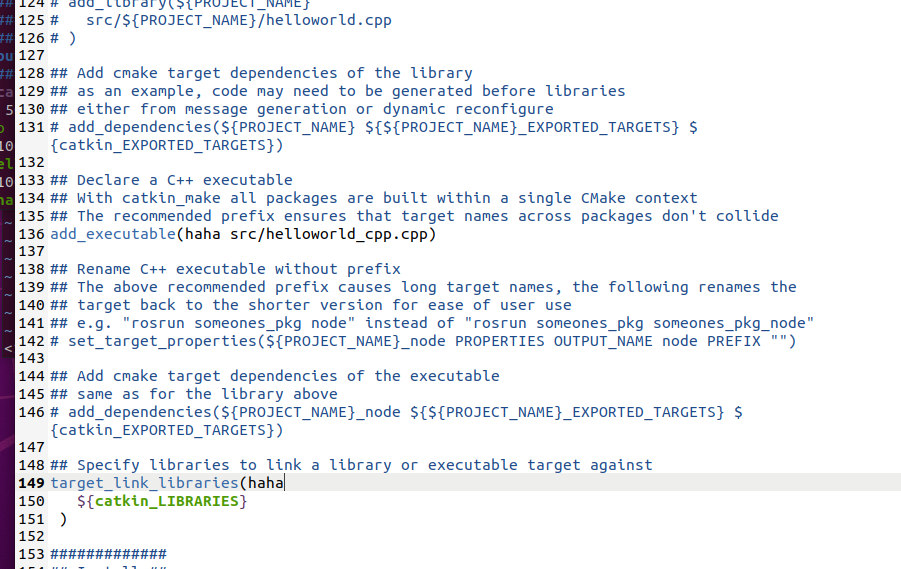
这个haha是Cmake下的临时变量，注意到149行的name必须和136行的name一致
最后一步就是编译！！！
退回到最顶层工作文件夹，再次编译，若有错，按照报错改！
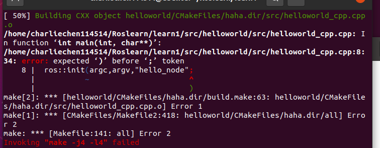
没有错的话，是这样的
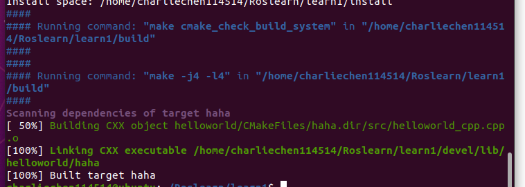
开一个新端
先让ros环境启动一下！
roscore 回到原来的终端，注意是原来的！！！
source ./devel/setup.bash 不知道啥情况的找到这个文件然后source一下。
下面，就可以有
rosrun helloworld haha
#helloworld包下的haha 至于集成的开发环境，可以考虑VScode+插件，具体的配置方法在我的博客已经讲述过了！不再讲述！
ROS节点说明
我们大多数时候需要启动多个ROS节点，这就需要我们写Launch文件来完成这个工作！
其实现如下：(以经典乌龟为例)
1)选定功能包右击—>添加launch文件夹
2)选定launch文件邮寄—>添加launch文件(xml文件)
3)书写
<launch>
<node ... />
</launch> node : 节点
pkg 功能包
type: 被运行的节点文件
name 为节点命名
output 设置日志的输出目标
roslaunch 包名 launch文件名称撸代码
下面,在一个节点下新建一个launch文件夹,随后在这个文件夹下面新建xml文件
<launch>
<!-- add nodes here-->
</launch> 不要急着就写下面,先保存,后跑一下可不可以跑!
摁 ctrl + ~打开bash ,先搞一下环境变量 source ./devel/setup.bash
然后跑一下
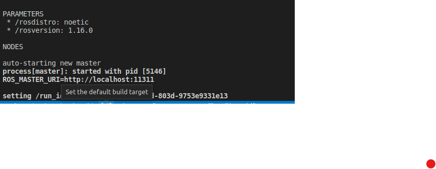
这个Launch标签就是启动环境的,下面开始书写
<launch>
<!-- add nodes here-->
<node pkg="turtlesim" type="turtlesim_node" name="GUI">
<node pkg="turtlesim" type="turtle_teleop_key" name="Key">
<node pkg="hello_cpp" type="hello_cpp_c" name="try" output="screen">
<!-- pkg是包名 type就是运行文件!切记-->
<!-- output 表示的是输出的日志输出在哪里-->
</launch>ROS架构
现在我们开始讲解ROS的架构
设计者
ROS的设计者将ROS表述为“ROS = Plumbing + Tools + Capabilities + Ecosystem”
Plumbing 是通讯机制（实现ROS不同节点）
Tools 是工具软件包（ROS开发和调试工具）
Capabilities 机器人高层技能（导航）
EcoSystem 机器人生态
维护角度
main:核心部分
universe: 一些扩展的代码
系统架构
ROS可以有三层
（1）OS层 ，也就是经典操作系统 ，ROS是一个元操作系统
（2）中间层：封装了一些机器人开发的中间件
如：基于TCP/UDP 继续封装的TCPROS/UDPROS系统
（3）应用层
自身结构
文件系统：ROS文件系统指的是硬盘上面查看ROS源代码的组织形式。
计算图： 不同进程需要的进行数据交互。计算图可以良好的表现他们的作用关系
开源社区：略
ROS文件系统

如上图，这就是一个ROS的文件结构。
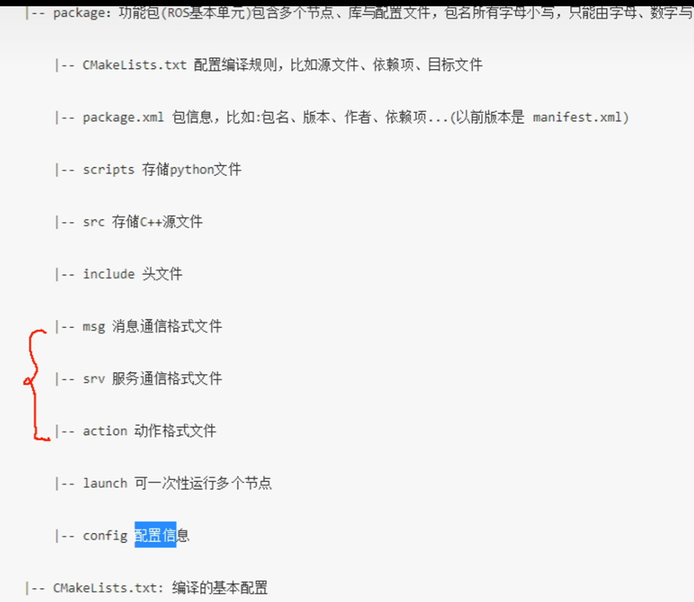
下面详细重点的介绍如下的文件
package.xml
这个文件是自动生成的，他在这里：

是的，就在SRC文件夹下面
打开看看，就会发现这里有软件包名称，版本号，作者，维护者以及其他信息。
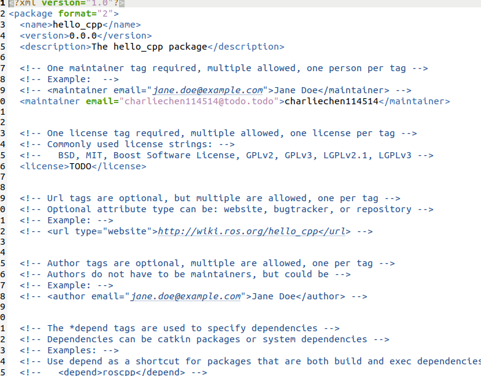

这里可以查看依赖。
CmakeLists.txt
隔壁就是CmakeLists.txt。大量的对象我们用到再说，先不说过多！
ROS文件系统的相关命令
下面我们来看一些常见的指令：
增
catkin_create_pkg 自定义的包名 依赖的包 == 创建新的ROS功能包
sudo apt install xxx ==安装ROS功能包 （后期经常用）
删
sudo apt purge xxx == 删除功能包
查
rospack list == 列出所有的功能包
rospack find 包名 == 查询寻包名是否存在，存在返回安装路径
roscd 包名 == 进入摸一个包
rosis 包名 == 列出包下的文件
apt search xxx == 搜索包
改
rosed 包名 文件名 === 修改功能包文件
执行
roscore === 是ROS系统先决条件和程序的集合，必须先启动ROScore
roscore
//
roscore -p xxxx # 指定端口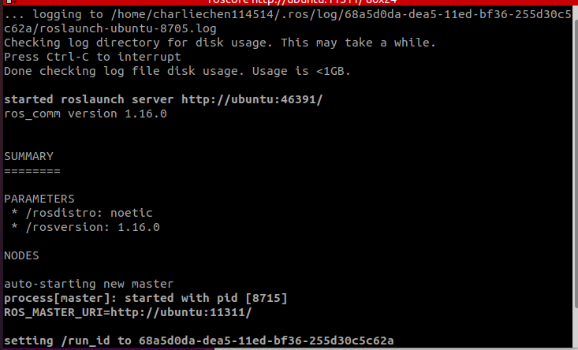
启动发现产生了大量的信息，这是熟知英文就可以读懂了，以及这个
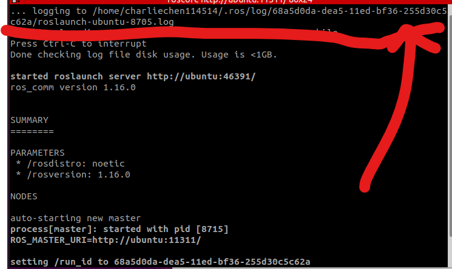
这个是输出日志的Linux地址，可以查看这里。
rosrun 包名 可执行文件名 === 运行指定的ROS节点 尝试一下：（rospack list）
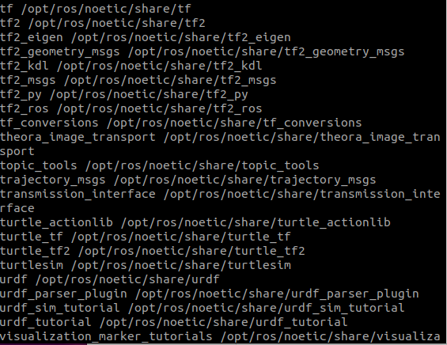
cd 一下

在全网搜寻一下：
apt search ros-noetic-*
当然，这不好，我们grep检索一下、
apt search ros-noetic-* | grep -i gmapping
计算图
下面要说的是显示个节点关系的一个有效的动态展示图，他就是rqt_graph，用来展示错综复杂的节点关系！
安装
直接先跑一下这个玩意
rosrun rqt_graph rqt_graph 如果告诉你没安装，装一下就好了：
sudo apt install ros-<distro>-rqt
sudo apt install ros-<distro>-rqt-common-plugins
-<distro>-用ROS你自己安装的版本替代！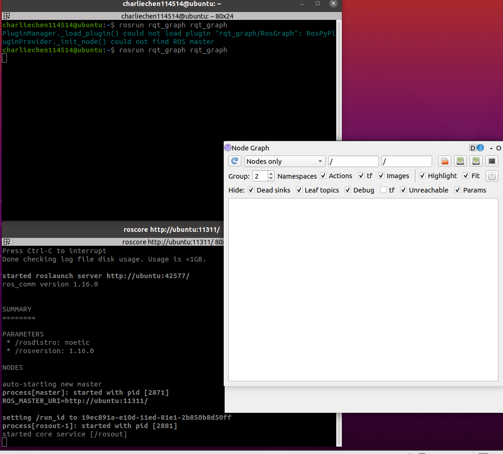
注意开的时候先把环境给开了！
然后，启动一下我们之前写的Launch脚本，这样，再次运行rosrun rqt_graph rqt_graph ：
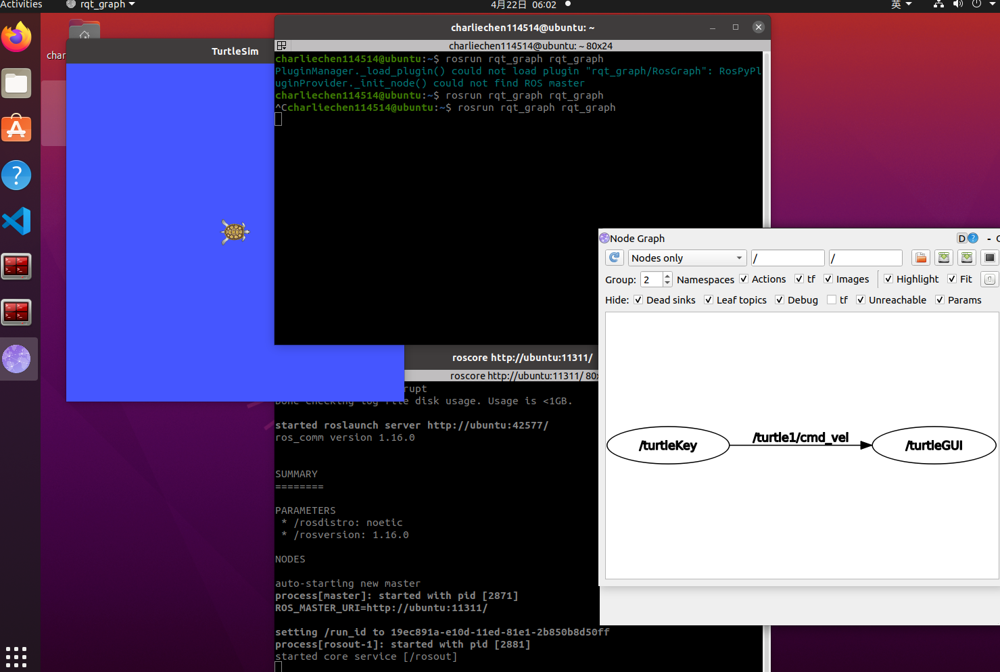
好了，基础的ROS认识就到这里，之后我们开始讲授核心！ROS的通讯机制！
ROS通信机制
机器人是一种高度复杂的系统性实现。在机器人上可能集成了各种传感器（雷达）等，为了解耦合，ROS的每一个功能点都是一个单独的进程，并且他们是可以独立运行的。ROS是进程的分布式框架。
ROS 实现通信机制的三种实现策略
1）话题发布 （发布订阅模式）
2）服务通信 （请求响应模式）
3）参数服务器 （参数共享模式）
话题通信
话题通信时ROS使用频率最高的一种通信模式，也是基于发布订阅模式的，也即：一个节点发布消息，另一个节点订阅信息：
如：机器人执行导航功能的时候使用的传感器时激光雷达，机器人会采集相关的信息并且完成计算，随后控制运动生成信息
这样通信的作用时用在不断更新的，少逻辑处理的数据传输场景。下面尝试实现一下！
在这个模型里头，有三条个主角：ROS MASTER（管理者），Talker（话题发出者），Listener（订阅者）
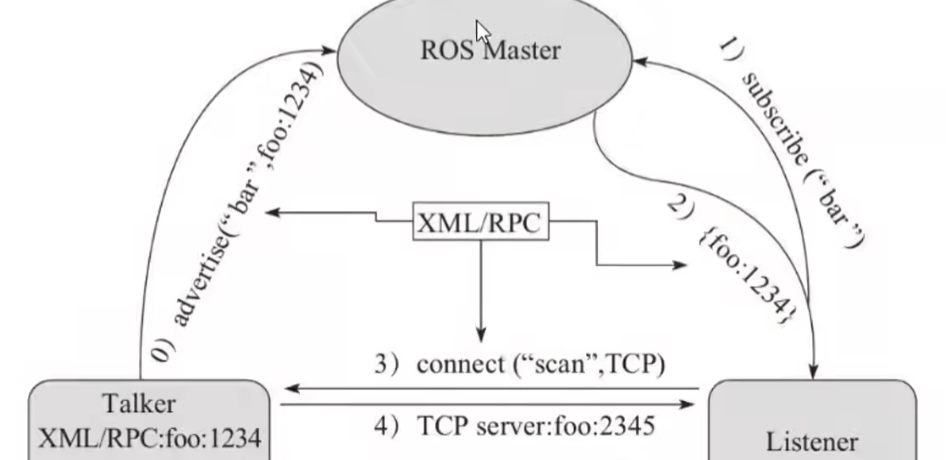
master 根据话题建立发布者和订阅者之间的联系。
使用的协议时RPC和TCP， 并且Listener和Talker可以存在多个。talker和Listener建立连接以后，master就可以关闭了。当然这些流程已经被封装，我们没有必要去了解。
实践1 - ROS in C++
例子：我们要以每秒10次的频率实现信息的发送！

我们按照先前早就讲过的流程创建一遍工程，在已经完事了的CPP文件下书写如下的代码
#include"ros/ros.h"
#include"std_msgs/String.h"
/*
publisher release:
1. incldue Files: ROS RO
2. init ROS node
3. create Handle of the node
4. create publisher
5,create publisher logic and the data
*/
int main(int argc, char* argv[])
{
// init a node
ros::init(argc,argv,"such_a_node"); // 别带空格！这是涉及到命令行的
// create a handle
ros::NodeHandle nodeHandle;
// create Publisher
ros::Publisher pub = nodeHandle.advertise<std_msgs::String>("this_is_a_topic",10);// 别带空格！这是涉及到命令行的
std_msgs::String msg;
// create the msg
while(ros::ok) // this node is still available
{
msg.data = "hello this is a msg"; // 设置字符串
pub.publish(msg); // 向外广播
}
return 0;
}

看到这个节点句柄的 advertise API了嘛，这就是一个广播函数第一个很好理解，就是话题名称，第二个是什么呢：我们的网络通信可能会有阻塞，于是ROS会将这些被阻塞的数据存储到队列里，等到网络稍微流畅的时候再发送出去！
当我们编完Ctrl + Shift + B结束编译之后，在一个命令行窗口处输入
roscore 启动大环境
rosrun publish demo_cpp

啥也没有！那就对了！
// 再开一个
rostopic echo + 'topic_name' 比如说我的就是
rostopic echo this_is_a_topic 消息就这样打印出来了！
下面设置一下频率！和计数器的使用
#include"ros/ros.h"
#include"std_msgs/String.h"
#include<sstream>
/*
publisher release:
1. incldue Files: ROS RO
2. init ROS node
3. create Handle of the node
4. create publisher
5,create publisher logic and the data
*/
int main(int argc, char* argv[])
{
// init a node
ros::init(argc,argv,"such_a_node");
// create a handle
ros::NodeHandle nodeHandle;
// create Publisher
ros::Publisher pub = nodeHandle.advertise<std_msgs::String>("this_is_a_topic",10);
std_msgs::String msg;
// create the msg
// create a ratio obj
ros::Rate rate(10);
int count = 1;
while(ros::ok) // this node is still available
{
//msg.data = "hello this is a msg";
std::stringstream ss;
ss << "hello from ------->"<<count;
msg.data = ss.str();
pub.publish(msg);
// add log
// transform into C Style String
ROS_INFO("broadcast the msg : %s",ss.str().c_str());
rate.sleep();
count++;
}
return 0;
} 这个字符串的拼接使用扩展的ROS里的函数

订阅方的实现
我们这样实现一个如此的Demo!
#include"ros/ros.h"
#include"std_msgs/String.h"
#include<sstream>
void doMsg(const std_msgs::String::ConstPtr &msg){
// by this const ptr to subscribe the msg
ROS_INFO("Have received the %s",msg->data.c_str());
}
int main(int argc, char *argv[])
{
/* same as before... */
ros::init(argc,argv,"sub");
ros::NodeHandle nodeHandle;
// the last var is the callBackFuncPointer
ros::Subscriber sub = nodeHandle.subscribe("this_is_a_topic",10,doMsg);
// nake sub receive the msg consistently
ros::spin();
return 0;
}
为了处理得到的信息，就是在这里的回调函数实现对信息的处理的！
当然，带上Cmakelists 的配置，不然系统不认识！
python
ros 的python就简单很多，逻辑类似于C++，不做更多的解释：
#! /usr/bin/env python
import rospy
from std_msgs.msg import String
"""message type"""
"""
load package
init ros node
create publisher
write the logic and broadcast
"""
if __name__ == "__main__":
rospy.init_node("pub")
pub = rospy.Publisher("topic",String,queue_size=10)
mag = String()
rate = rospy.Rate(1)
count = 0
rospy.sleep(3) // 让之可以在后被启动的时候让sub完全接收到所有数据
while not rospy.is_shutdown():
count += 1
mag.data = "hello" + str(count)
pub.publish(mag)
rate.sleep()
#! /usr/bin/env python
"""
sub basic steps
1. import rospy std_msgs
2. init node
3. create a subscriber
4. using call back functions to deal with data
5. make spin() in python
"""
import rospy
from std_msgs.msg import String
def doMsg(msg):
rospy.loginfo("The subscried data is:%s",msg.data)
if __name__ == "__main__":
rospy.init_node("subscribe")
sub = rospy.Subscriber("topic",String,doMsg,queue_size=10)
"""need the name the same as publisher"""
rospy.spin()
pass